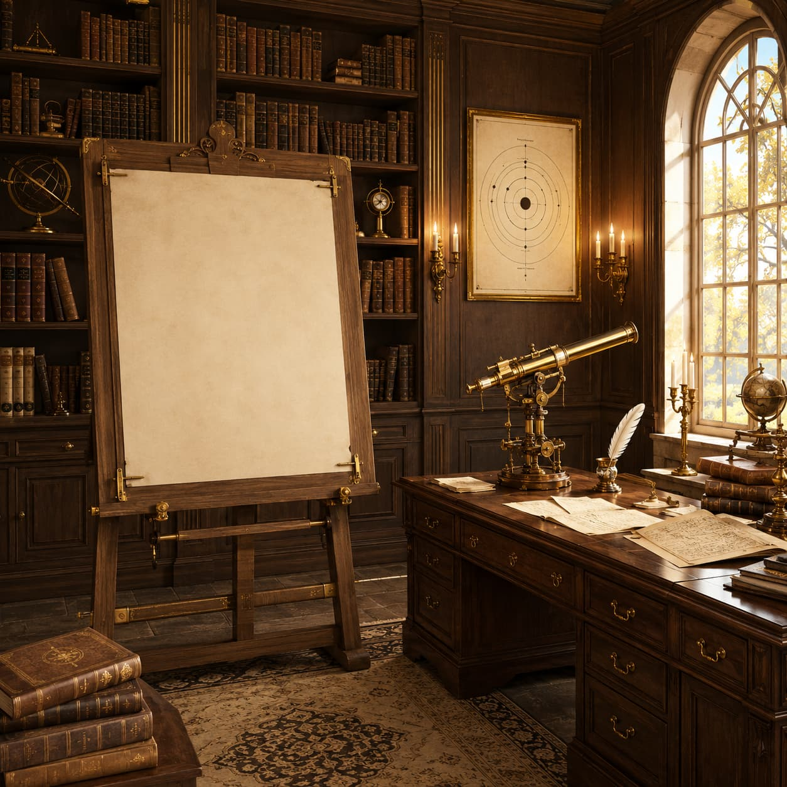

Time Capsule — 1913
Bohr: "Before we begin, let's revisit Rutherford's model. According to him, the atom would be like a small solar system: a dense, positive nucleus at the center, with electrons orbiting around it. This model explained the result of the gold foil experiment very well. But it has two serious problems. Click on the easel to begin."
Room Progress
Problem 1 — Instability of the Atom
why doesn't the atom collapse?Problem 2 — Discrete Spectra
why only certain colors?Flame Test
each element has its own colorPostulate 1 — Stationary Orbits
the atom does not collapsePostulate 2 — Quantization
only certain energies are allowedPostulate 3 — Absorption and Emission
ΔE = h·vQuantum Jump Simulator
the bigger the jump, the more energetic the photonGallery of Applications
neon, fluorescence, laser, bioluminescenceFinal Challenge
identify the element by the flame's color